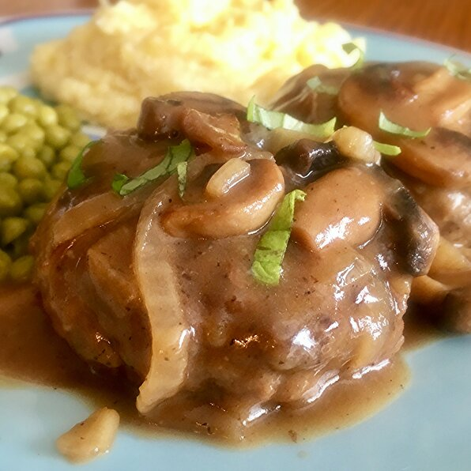

Home
Salisbury Steak

An all american meal the whole family will love
I dont know about you, but I LOVE hambuger. I do, however, get sick of the "normal" hambuger foods out there. Salisbury steak though is truly an all time favorite of mine. This recipe is pretty simple and will have your mounth watering in to time.
Ingredients
Patties
- 1lbs groud sirloin
- 1/2 cup panko break crumbs
- 1 egg, beaten
- 2 tablespoons milk
- 1/2 (1 ounce) package dry onion soup mix
- 1 teaspoon worcestershire sauce
- 1/4 teaspoon ground black pepper
Gravy
- 3 tablespoons butter
- 2 cups fresh mushrooms, sliced
- 1 sweet onion, sliced
- 1/2 (1 ounce) package dry onion soup mix
- 1 1/2 cup beef stock
- 1 cup water
- salt and ground black pepper to taste
Steps
- Mix ground sirlon, panko bread crumbs, egg, milk and 1/2 packet onion soup mix, worcestershire sauce, and black pepper together in a large bowl.
- Heat a skillet over medium heat. Cook patties in hot skilles until browned, 3 to 5 minutes per side.
- Melt butter in a seperate skillet over medium-high heat. Saute mushrooms and onion in melted butter until tender, 5 to 7 minutes. Stir flour and remaining dry onion soup mix into the mushroom mixture; cook and stir until flour is integrated fully, about 1 minute. Stream beef stock and water over the mushroom mixture while stirring continually; bring to a simmer, reduce heat to medium, and cook, stirring frequently, until the liquid thickens, about 5 minutes. Season with salt and pepper.
- Lie the browned steaks into the gravy; simmer until steaks are firm and gray in the center, about 30 minutes. An instant-read thermometer inserted into the center should read 160 degrees F (70 degrees C).